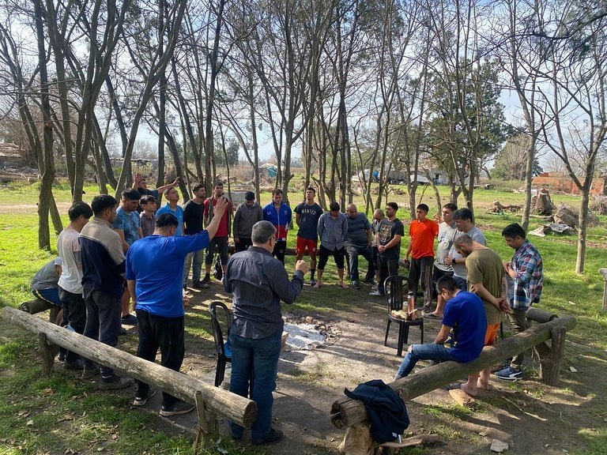

En nuestra granja de rehabilitación cristiana encontrarás un espacio de sanidad integral, donde la fe, el amor y la naturaleza se unen para brindarte una nueva oportunidad de vida.

Transformando vidas a través del amor de Cristo y la terapia integral
Desde hace más de 10 años, nuestra granja ha sido un refugio de esperanza para personas que luchan contra las adicciones. Combinamos principios cristianos sólidos con terapias profesionales modernas en un ambiente natural que favorece la sanidad integral.
Fundamentados en la Palabra de Dios y la obra transformadora del Espíritu Santo
Psicólogos, trabajadores sociales y consejeros certificados
El contacto con la naturaleza y el trabajo agrícola como herramientas de sanidad
Conoce más sobre nuestro ministerio y las instalaciones
Tratamientos integrales adaptados a cada necesidad
Internación completa de 6-12 meses con seguimiento 24/7, terapias grupales e individuales, y formación laboral.
Sesiones diarias de 4-6 horas, ideal para personas con responsabilidades familiares o laborales.
Terapia y formación para familiares, entendiendo que la adicción afecta a todo el núcleo familiar.
Conoce cómo Dios ha obrado milagros en vidas que parecían perdidas
Comparte nuestro día a día y las actividades de la granja
Cargando posts...
Ubicados en un entorno natural perfecto para la sanidad y restauración
Av. de los Incas, Ibarlucea, Santa Fe
Localidad, Santa Fe - Argentina
24 horas, 7 días a la semana
Crisis: inmediata
Haz clic en el mapa para abrir direcciones en Google Maps
Estamos aquí para ti. Da el primer paso hacia tu nueva vida.
Si tú o un ser querido están en crisis, llámanos inmediatamente. Tenemos personal disponible las 24 horas.
¿Tienes preguntas sobre nuestros programas? ¿Quieres saber más sobre el proceso de admisión? Completa el formulario y te contactaremos.